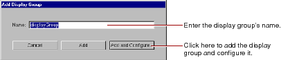
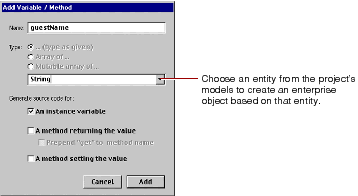
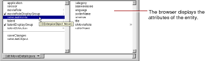

Table of Contents
Table of Contents  Next Section
Table of Contents
Next Section
Table of Contents  Previous Section
Previous Section
This section describes the mechanics of adding display groups to a WebObjects project. For detailed information about display groups, see the WODisplayGroup class specification in the WebObjects Class Reference. To learn more about how to create a WebObjects database application, see "Creating a WebObjects Database Application" in Getting Started With WebObjects.
WebObjects applications access databases through the Enterprise Objects Framework, which represents database rows as enterprise objects. Enterprise object classes typically correspond to database tables, and an enterprise object instance corresponds to a single row or record in a table. For detailed information on enterprise objects, read the Enterprise Objects Framework Tools and Techniques.
When you do this, a panel asks you if you want to add the model to your project. If you reply Yes, the Add Display Group panel appears.

It allows you to specify a name for your display group and decide if you want to simply add the display group, or configure it as well. "Configuring the Display Group" describes the configuration process.
protected WODisplayGroup myDisplayGroup; //this is a Java example
When you add a display group this way, you are responsible for making sure your project contains the appropriate model file. (For example, once a model file has been added, you can create any number of display groups based on it). In addition, you need to configure the display group.
When you use the Add Variable/Method panel, you can create not only display group variables, but also enterprise objects associated with any of the entities in your project's models.

In the figure, if you choose the entity Movie as the variable's type, the following code gets added to your source file:
/** @TypeInfo Movie */ protected EOEnterpriseObject selectedMovie;The variable selectedMovie is declared as type EnterpriseObject. The comment /** @TypeInfo Movie */ is a structured comment that WebObjects Builder uses to identify the entity associated with the object (don't edit it). It is then able to display the attributes in the object browser as shown here:

Table of Contents Next Section